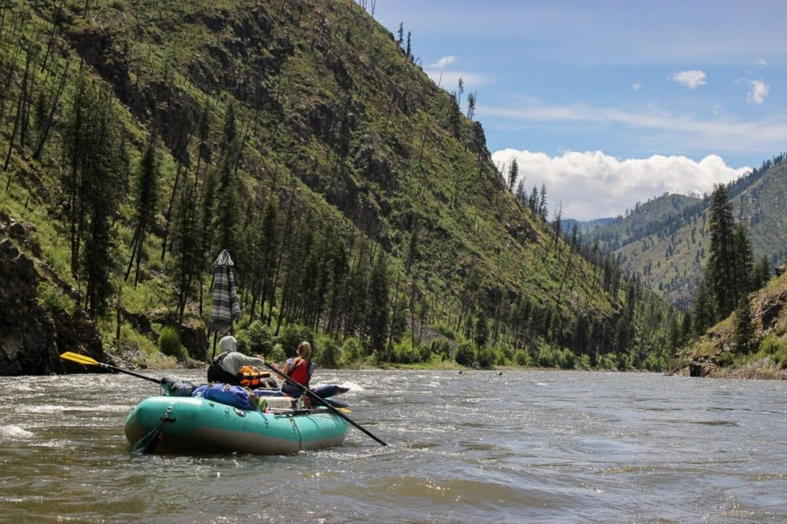
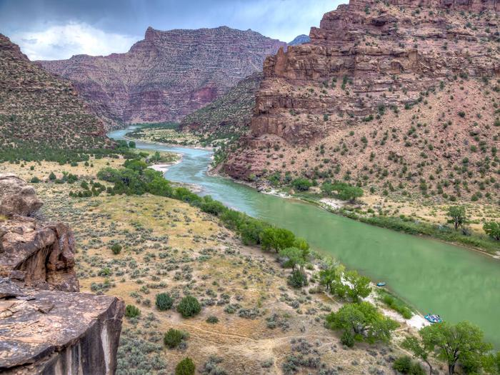
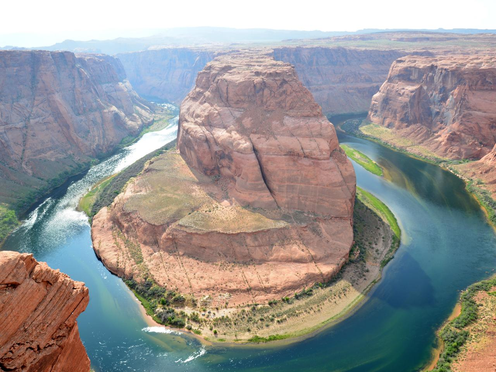

Main Fork of The Salmon River, Idaho
Desolation and Gray Canyon, Utah
Grand Canyon, Arizon
A rafting trip down the Salmon River (aka "The River of No Return") makes for a wonderful family vacation. It is best know for its big canyon, sandy beaches, and big water rapids. Most trips cover the 84 miles of wilderness in five or six days. The river was a rich source of food for the indigenous people of the area, who relied on the abundant salmon and other wildlife.
Want to run a river? Want to experience the beautiful scenery of canyons in central Utah? Desolation Gray Canyons of the Green River may just be what you want. The 84-mile trip from Sand Wash to Swaseys Rapid offers outstanding scenery, interesting geologic formations, evidence of prehistoric and historic human activity, and whitewater opportunities.
Grand Canyon National Park, in northern Arizona, encompasses 278 miles (447 km) of the Colorado River and adjacent uplands. Located on the ancestral homeland of 11 Associated Tribes, Grand Canyon is one of the most spectacular examples of erosion anywhere in the world—unmatched in the incomparable vistas it offers visitors on the rim. South Rim and North Rim are open 24/7/